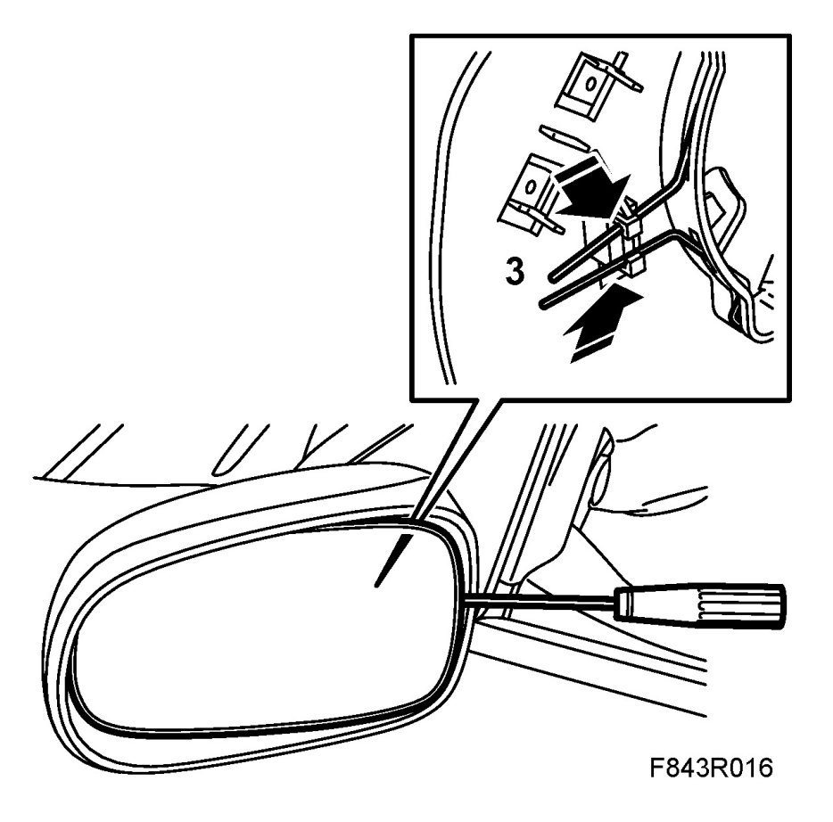
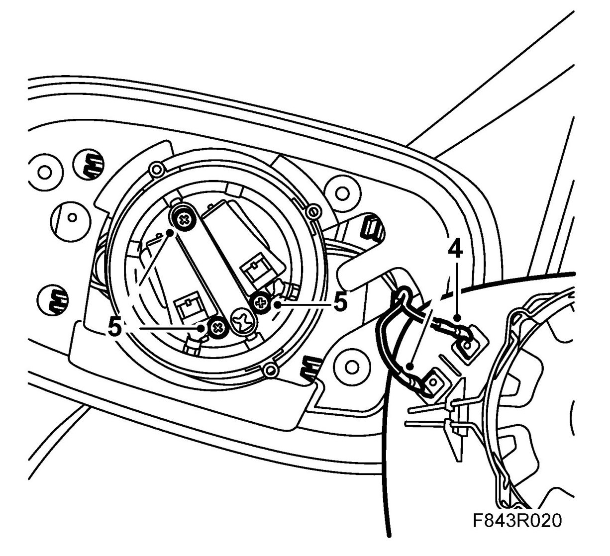
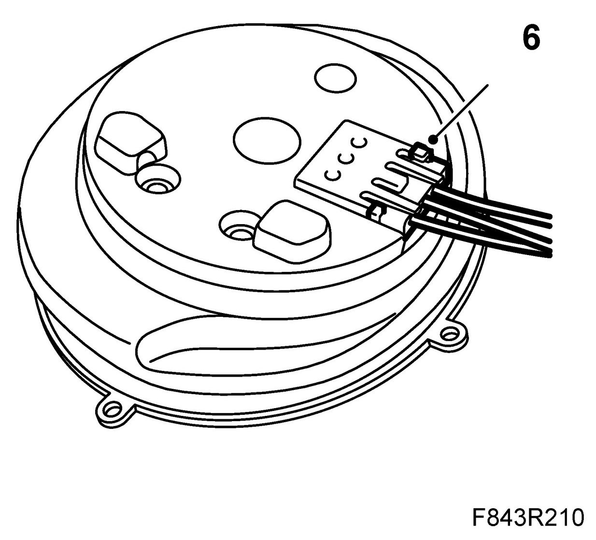
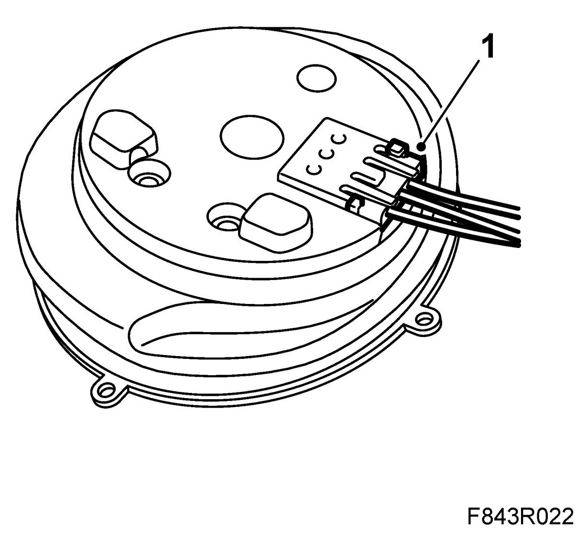
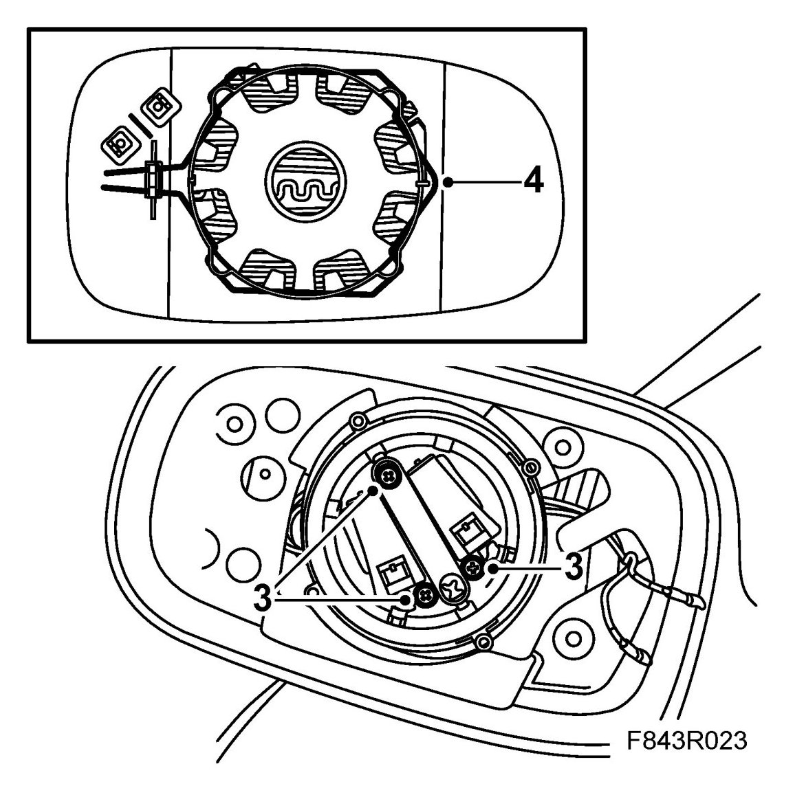
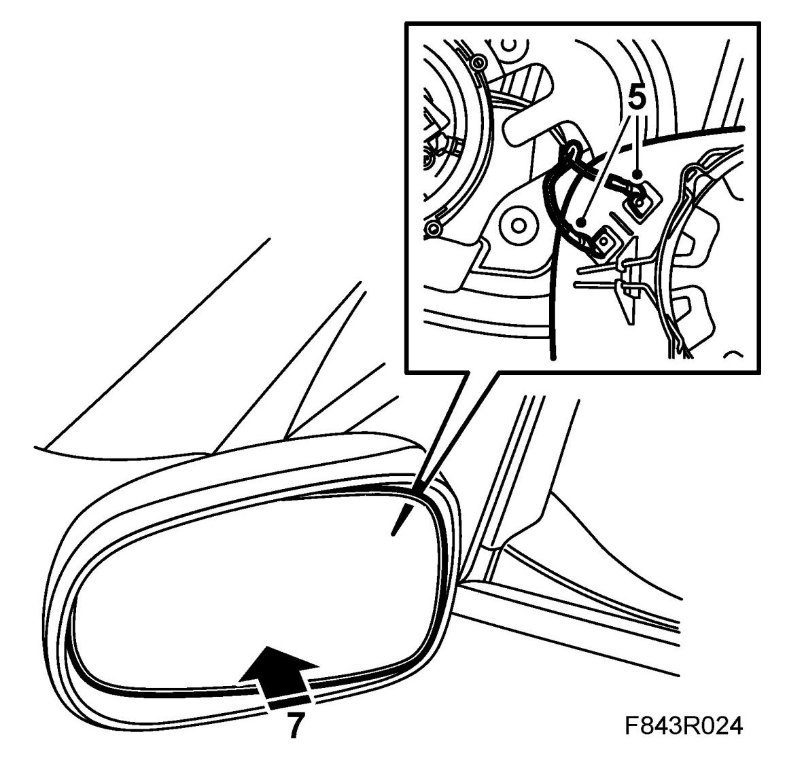

Power Mirror Motor: Service and Repair
Door Mirror, Motor
To remove
1. Fold the door mirror forward.
2. Angle out the glass.
3. Unhook the spring clip using a screwdriver.

4. Unplug the connector and lift aside the glass.

5. Remove the screws securing the motor.
6. Lift out and unplug the motor.

To fit
1. Plug in the connector.

2. Position the motor.
3. Fit the bolts.

4. Make sure that the spring clips on the glass are correctly positioned.
5. Plug in the mirror connector.

6. Fit the glass to the motor.
7. Carefully press in the glass until you hear a click.
8. Check the function of the door mirror.